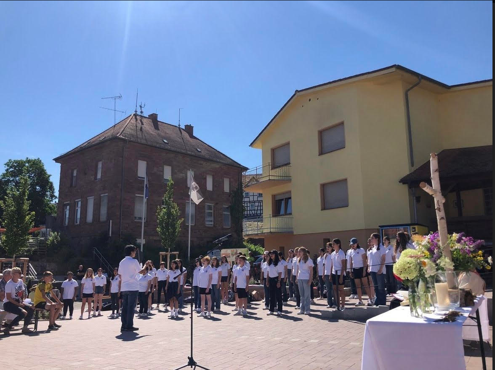

This is an image of the musical I was in during furst semester, "Matilda." I have been pursuing the performing arts since age 7 and hope to make theater a career in the future and every show I am in is another step to making that dream a reality. This summer I plan to be in the show, "Hunchback of Notre Dame" as Esmeralda, which is very exciting.
This summer I had the opportunity to visit Denmark and Germany with my choir, touring through cities to perform and meeting with other 'sister' choirs across the globe. At the end of the tour, my choir homestayed in the small town, Hochhausen, where we were able to enjoy our stay in Germany with a few performances throughout the 5 days. I will carry this experience with me for forever as it truly was a once in a lifetime experience.